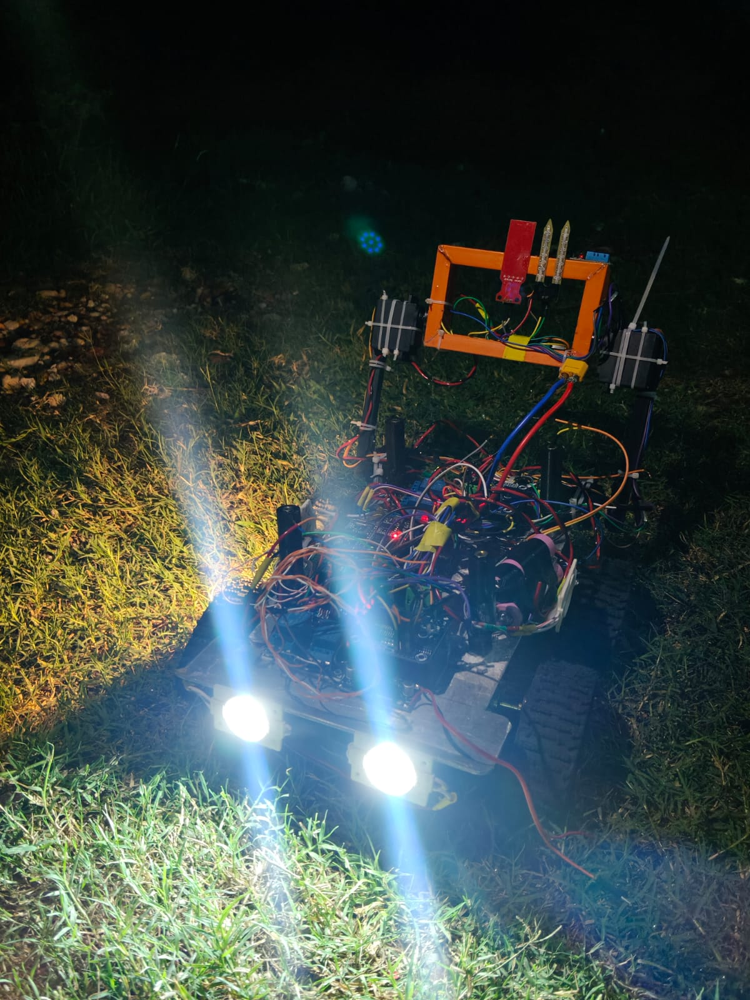
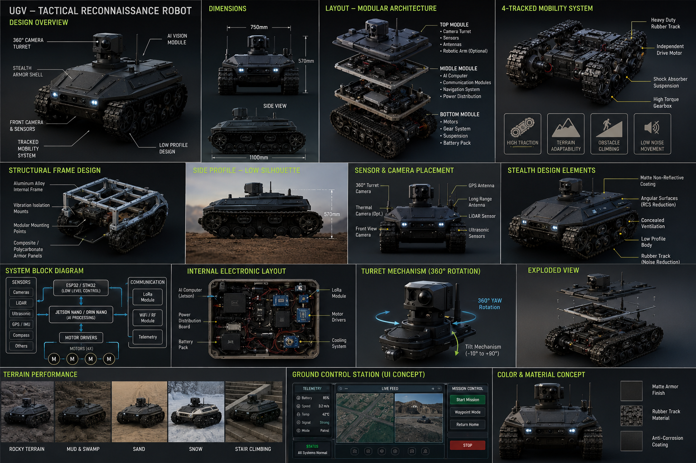
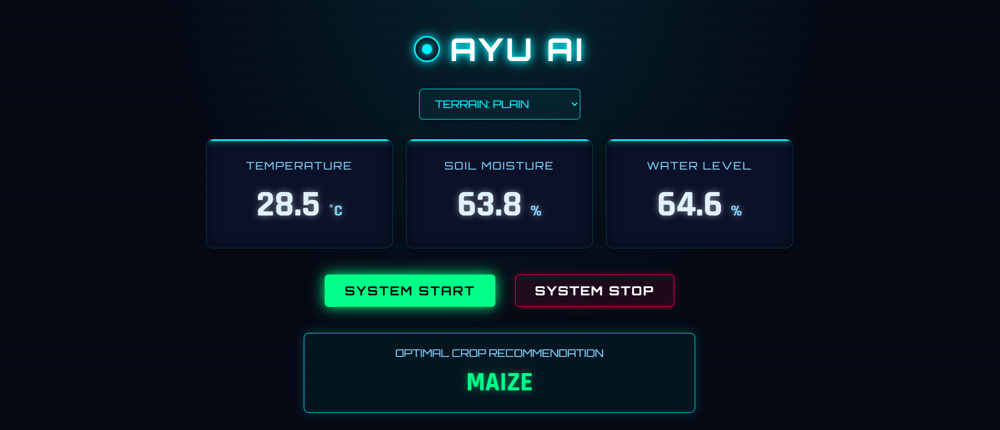

OUR ENGINEERING PORTFOLIO
Every innovation developed by Team Eco Vision is built to address real-world challenges through engineering, embedded systems and artificial intelligence.

Solar Powered Precision Agriculture Rover
AI Powered autonomous farming robot equipped with intelligent sensing, crop monitoring and precision agriculture capabilities.
Explore Project →
Tactical Reconnaissance UGV
Edge AI enabled unmanned ground vehicle for surveillance, reconnaissance and defence applications.
Explore Project
GO FREE ETENS
🏆 National Ideathon Champion. An intelligent wearable TENS device providing safe, non-invasive and drug-free relief from menstrual pain, including pain associated with PCOS and PCOD.
Explore Project →
AYU AI
AI-powered agricultural assistant providing intelligent recommendations, crop analytics and smart farming support.
Explore Project